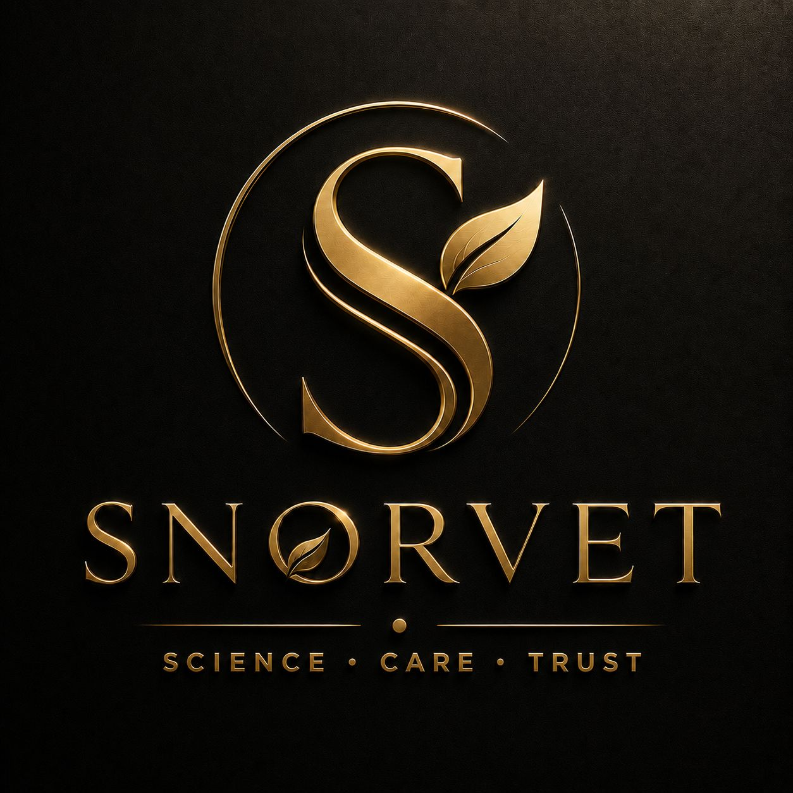

SNORVET
SNORVETPremium, plant-backed dietary formulations and adaptogens for modern human wellness. 100% plant-based, third-party tested, and organic.
Advanced, science-driven healthcare products, joint supports, and clinical serums trusted by veterinarians and loving pet owners.